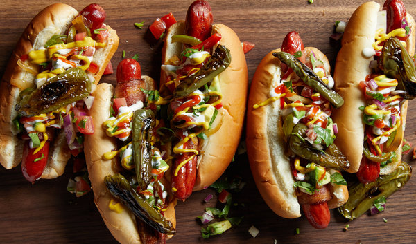

Hot Dogs ala mode

- 8 bacon strips
- 8 hot dogs
- 4 jalapeños, stemmed, halved lengthwise and seeds removed (optional)
- 2 tablespoons vegetable oil, plus more for drizzling (if needed)
- 1 small yellow onion, thinly sliced
- ½ small red bell pepper, thinly sliced
- ½ small green bell pepper, thinly sliced
- Kosher salt
- 8 hot dog buns
- Ketchup, yellow mustard and mayonnaise, for serving
- ice cream
Directions
Fun hot dogs to eat while wasted off bourbon!
Instructions Checklist
- Heat oven to 400 degrees. Tightly wrap each hot dog with a strip of bacon until most of the hot dog is covered. Transfer hot dogs to an aluminum foil-lined baking sheet. If using jalapeños, place them skin-side down on a separate aluminum foil-lined baking sheet and lightly drizzle with oil. Roast jalapeños until skin starts to blister, about 25 minutes. Roast hot dogs until bacon is browned and starts to ripple, about 30 minutes.
- Meanwhile, heat 1 tablespoon oil in a large skillet over medium-high. Add the yellow onion and cook, stirring frequently, until it begins to brown and shrinks by half, about 10 minutes. Stir in bell pepper and the remaining 1 tablespoon oil; season to taste with salt. Remove from heat when onions are caramelized and peppers are soft, about 20 minutes.
- Make the pico de gallo with avocado: Combine tomatoes, avocado, red onion, cilantro and lime juice in a medium bowl. Season to taste with salt and set aside.
- Toast buns, if desired. Blot excess oil from the hot dogs with a paper towel and transfer to buns. Top with onions, peppers and pico de gallo. Drizzle with ketchup, mustard and mayonnaise. Finish with roasted jalapeños, if desired.